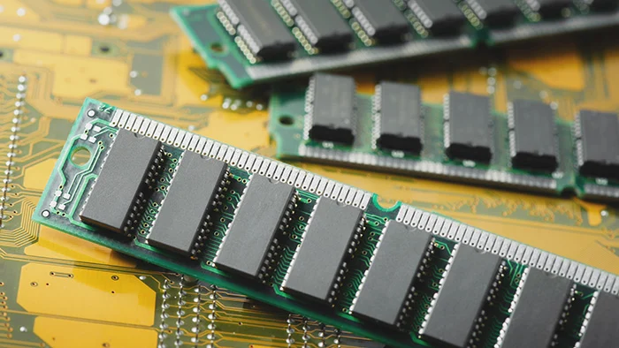

RAM
Computer RAM, or random access memory is another essential part of a computer. Think of RAM as the short term memory of the PC. It stores all the data and information your computer is currently producing. When you switch between programs or apps, your PC looks into the RAM to see where you last left off, so it can go back to that state. The more RAM that your PC has, the more data it can store at once, so programs will run more smoothly and load up quicker. You absolutely need RAM to be able to boot into your computer, without it nothing would work. Just like the CPU, RAM sticks attach to the motherboard (which I will talk about later).
Click the next page button to learn about the GPU!